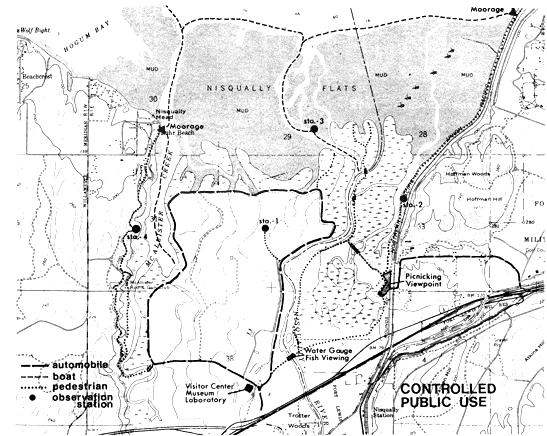
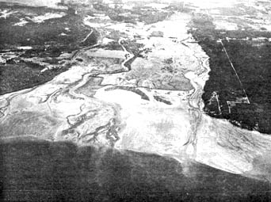

LANDSCAPE ARCHITECTURE QUARTERLY/Schuster Building/1500 Bardstown Road/Louisville, Kentucky 40205/U.S. and Canada, $8.50 One Year/Foreign, $10.75, One Year.
Nisqually Delta, Wash.
One day in 1969 some friends, my partners, and I were discussing the loss of a beautiful oak and fir hillside overlooking a swamp. It was being developed by builders who called themselves "The Preservationists"! Another developer, with us at the time, objected. "Listen, if you'd wanted to save that land, why didn't you buy it, instead of expecting the owner to give it away?"
We had no answer at the moment, but since that time it has begun to come clear. We have watched development, been a party to development, and reached conclusions. When developers "finish" a site it is truly finished as far as its original assets are concerned. All have been destroyed, or lost their meaning.
Gradually we became convinced that all land has "destruction value." This can be accurately measured on an economic scale, just as the "location value" of land is traditionally appraised, taxed, and used as a basis for trade.
Every square foot of original natural topography, every cubic foot of soil, every spring, creek, pond, swamp or drainway, every bird and animal, every tree and shrub has value that can be measured.
If the developer eliminates these things by "improving" through clearing, excavating, filling, dredging, refilling, regrading, covering with buildings and pavement, then he should pay to a public body of jurisdiction a destruction penalty equal to the appraised ecological loss incurred.
Such funds would then be used only to administer programs for land acquisition, protection, and the development, management and maintenance of greenbelts, parklands, wetlands, shorelands, future living reserves, etc.
We have applied this principle to a remarkable landscape, the Nisqually Delta, an estuary of the Nisqually River which rises on the southern slopes of Mount Rainier and empties into a southern reach of Puget Sound. The site has 4,150 acres and is being hungrily eyed by the City of Tacoma and other interests as the potential site of a new port. Ownership is mixed-public and private-with the National Audubon Society having acquired recently a key tract to help in preservation.
In February, 1970, the Washington House of Representatives adopted a document preserving Nisqually Delta-but accepted a reservation promoted by a commerce-minded group saying this not be "inconsistent with the industrial development of said delta." This left the gate open to anything.
Since that time our application of the Landscape Destruction Value Doctrine has shown this land to have a destruction value of over $40,000,000. We have done our homework, supported by the National Audubon Society and local citizens groups determined that this delta shall not go down the development drain as usual and that new thinking and actions are needed to reverse development trend-line processes.
We have carefully established the destruction value of all components of this landscape, except the underwater habitat, used comparable values wherever available, and tallied up the total.
For example, ground cover. On the Delta land for which the Port has plans, about 625 acres would be covered under many feet of gravel. Accepting only grasses lost, we figure the minimum cost of destruction would be $196,000. Another 300 acres would be stripped for gravel, killing ground cover on some 200 acres which would cost about $4500 per acre to replace, or another $900,000. Thus our statement for loss of ground cover comes to $1,097,000.
Trees: the National Shade Tree Conference has established the basic value of trees at $9 per square inch of the cross-section at 4 1/2 feet above grade. For this reforested area, we assume 10 trees of 6" diameter for every 1,000 square feet over 300 acres on this site, giving a tree destruction value of $6,657,000.
View: the loss of view value would be large, estimated at $4,000 per lot for 370 sites on the west and 160 sites on the east. Total view loss is $2,120,000.
Soil: The Port proposes to cover 1,200 acres of usable soil. Assuming 625 acres excavated 3' deep for topsoil, or 3,025,000 cubic yards at 25 cents, this adds a destruction payment for soils of $756,000.
Gas exchange: The loss of CO 2 reduction capability can be estimated by noting that one acre of green space removes an average of approximately 30 cu. ft. of CO 2 from the atmosphere daily. Assigning a 50-year life to the project, we figure the loss of CO 2 deduction capacity is at $215,350 per year over 925 acre affected, or $10,768,000 over the life of the project the project.
Red Salmon Creek: As a landscape scape feature it is worth $100 a front foot, or a total of $250.000. Its flow of 10 cubic feet per second is worth about $12 per day, or $219,000 over the project life. Thus frontage and water together add $469,000 to the destruction value of the creek.
Birdlife: About 20.000 hunter days are supported from the Delta at $5.75 per hunter-day, or a total of $115,000. About 125,000 waterfowl use the flats as a flyway stop per year, about 75,000 of them new birds. If we consider these 75,000 as the annual crop log, per year after a superport is built, can compute the 50-year loss (at $5 per duck) ar
$18,750,000.
Combining all these anticipated losses due to development over the 50-year life of the project produces the total destruction payment due of $40,617,000.
How often do the promoters of large developments consider such losses? Hardly ever. It remains for landscape architects, conservationists, and all others dedicated to sound ecosystem preservation to do their studies on their own time, figure the losses as accurately as possible, and thereby put these valuable resources beyond the reach of development, hopefully.
In the long run, this will help establish an accurate measure of value of landscape resources; it could produce large sums for public-landscape purchase and conservation; and divert the forces of necessary development into sites where they do the least harm to our future environment.
|
 |
 |
|